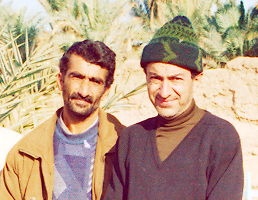

I met Mohammad Sheibani in a desert near Khoor and, in central Iran, while trying to find the way to the small village of Mesr. He was generous enough to park his motorcycle in the middle of nowhere and accompany us to the village. Since then we have been friends. He is an elementary school teacher and also operates a meat shop in Khoor. His passion is hunting with his Brno rifle. His request for me to bring him a rifle scope from the US resulted in my investigations about Brno history and technical aspects. Of course, he didn't get a scope from me, as I don't approve of hunting the few remaining games in the region. He got a Leupold scope from other sources.

Mohammad Sheibani and Ali Parsa in Khoor, October 2000.